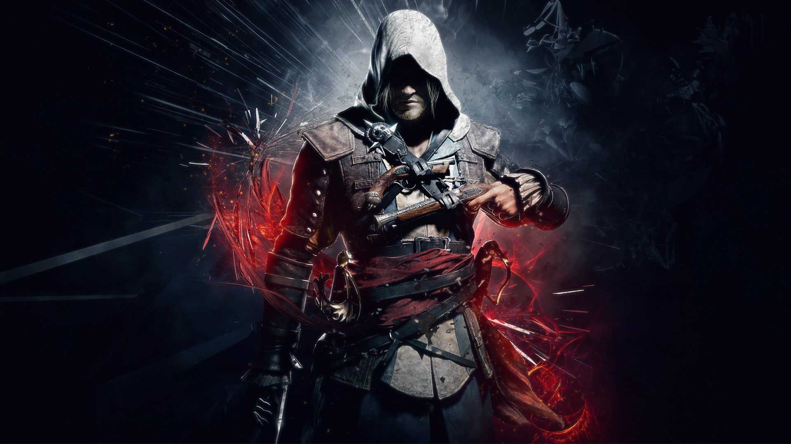
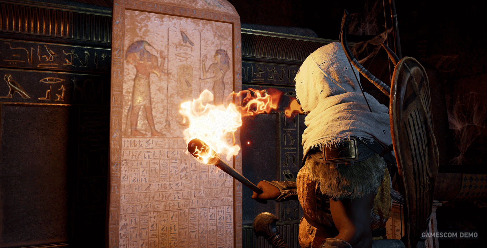
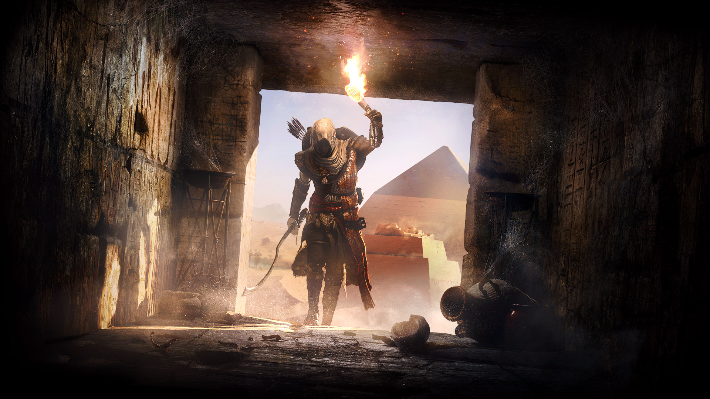
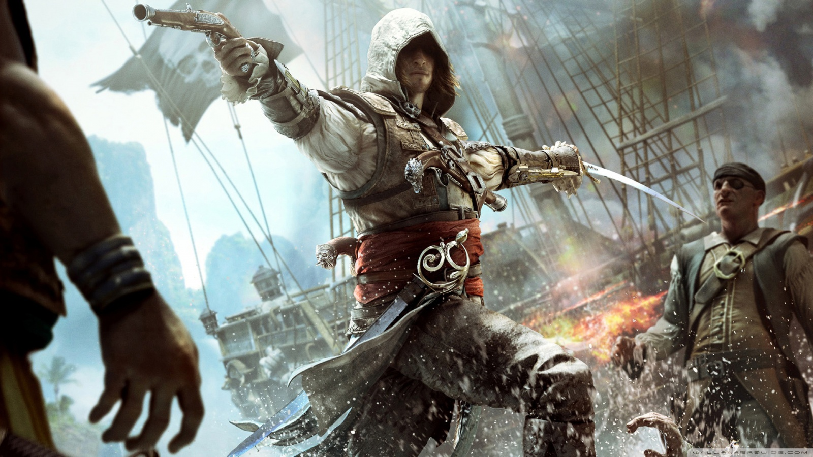

The legends are based on the Nizari Ismailis �a breakaway group from the Ismaili branch of Shia Islam �that occupied a string of mountain castles in Syria and Iran from the end of the 11th century until the Mongol conquests in the middle of the 13th

The first group of assassins to be found in the historical record is that of the Hashshashin who operated in Persia, Syria, and Turkey, eventually spreading throughout the Middle East. They assassinated their political and financial foes until the organization met its own demise in the middle of the 13th century. When we think of an assassin we see a figure lurking and waiting in the shadows, killing for dark political reasons, with little thought for passions of the heart or interest in money. And that isn�t far off from how the actual assassins operated in the 11th through 13th centuries. For More Details.

An assassination may be prompted by religious, political or military motives. It is an act that may be done for financial gain, to avenge a grievance, from a desire to acquire fame or notoriety, or because of a military, security, insurgent or secret police group's command to carry out the homicide
Swim half a mile or more: for when you need to dive underwater to avoid capture and swim to a more secluded location. Run at top speed for 200 yards or more: for when you are spotted and need to run away to avoid capture. Jump over obstacles higher than your waist: for when you need to climb buildings, hurdle obstacles while being chased, and more. Do fifteen to twenty pull ups: for when you need to scale buildings to stalk your prey from above. Dip between parallel bars twenty-five times or more: to hoist yourself up onto ledges or to push yourself away from one wall to leap to another.
Instead, I want to talk about analyzing your environment � often times you�ll be in a situation where you�ll need to get creative with your surroundings in order to succeed. Let�s say you need to assassinate a target on the other side of a building.
It�s time to trade in those clunky running shoes and change up your running style � pick up a pair of Vibram Five Fingers (or even go barefoot) and learn to run barefoot � your calves will HATE you for a few weeks but your knees, hips, back, and other joints will love you. Get good at running silently by landing softly, and pick surfaces that hide your footsteps � grass is optimal.
You need to become quick like an assassin by training with purpose. If you�re at the gym or training in your backyard, stop chatting on the phone. Don�t spend hours on a treadmill watching Oprah. Don�t waste any extra time sets. Get into that gym, get your workout done quickly, and get the hell out of there. Set a timer and tell yourself that you need to be done with your workout in 45 minutes or less.
The Assassins Brotherhood is underground network of people working to help each other accomplish goals. Although most assassinations are solo missions, assassins can often work together to eliminate a target. When not on a mission, students of the brotherhood learn from those more advanced and experienced than them. The more senior assassins help put together teams that maximize the chance for success in every mission. Assassins looks out for their brothers (and sisters) by helping out in any way possible.
| RANK | ASSASSIN NAME | BORN | BROTHERHOOD JOINING | WEAPONS |
|---|---|---|---|---|
| 1 | POWERFUL: AYA OF SIWA | 48 BCE | N.A. | Everthing |
| 2 | WORTHLESS: AGUILAR DE NERHA | 1455 | 1479 | Hidden Knives,Sword,Short Blades and many more. |
| 3 | POWERFUL: EZIO AUDITORE DA FIRENZE | 1459 | 1512 | Hidden Blades,A Sword, Throwing Knives, Smoke Bombs, Short Blade and many more. |
| 4 | WORTHLESS: ARNO DORIAN | 1768 | 1791 | Swords, Pistols, Spears, Heavy Weapons, Rifles as well as Guillotine Guns |
| 5 | POWERFUL: EVIE FRYE | 1847 | 1868 | Hidden Blades,Ane-Aword,Kukri,Firearms,Brass knuckles,Throwing knives,Smoke bombs and Voltaic bombs |